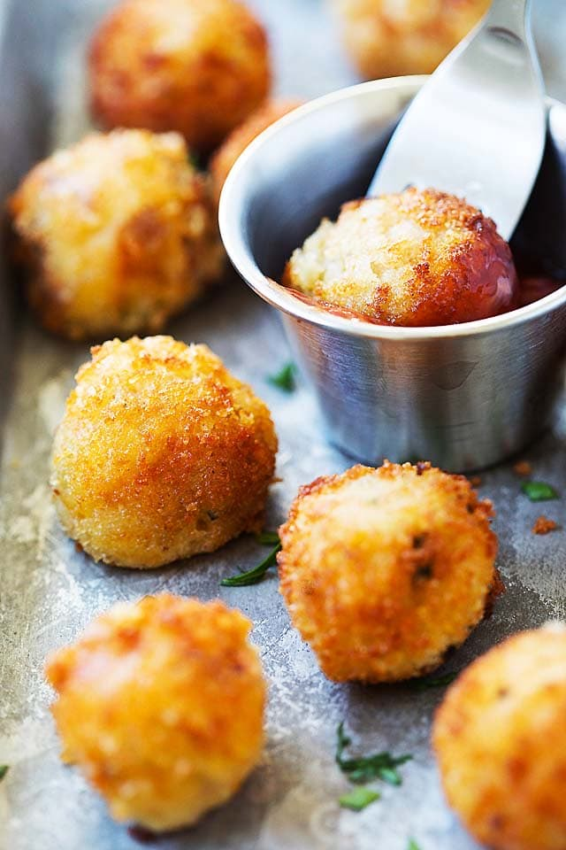

Crispy Potato Balls

Description
Mashed up potatoes fried in a pan. Best served with some salt and vinegar.
Ingredients
- 1.3 lbs (600 g) potatoes
- 4 tbsp cornflour
- 1/2 tsp salt
- 1/2 tsp black pepper
- 1.35 fl oz (40 ml) cooking oil
Steps
- Cook the potatoes in salted water until tender. Drain and mash them
until smooth.
- In a large bowl, combine the mashed potatoes with
cornflour, salt, and black pepper.
- Using your hands, shape the mixture into small, golf-ball-sized spheres.
- In a frying pan, heat the oil to 160°C.
- Fry the potato balls in batches, making sure not to overcrowd the pan. Cook until
they are golden and crispy, about 7 minutes.
- Remove the potato balls from the oil and place them on a wire rack to drain.